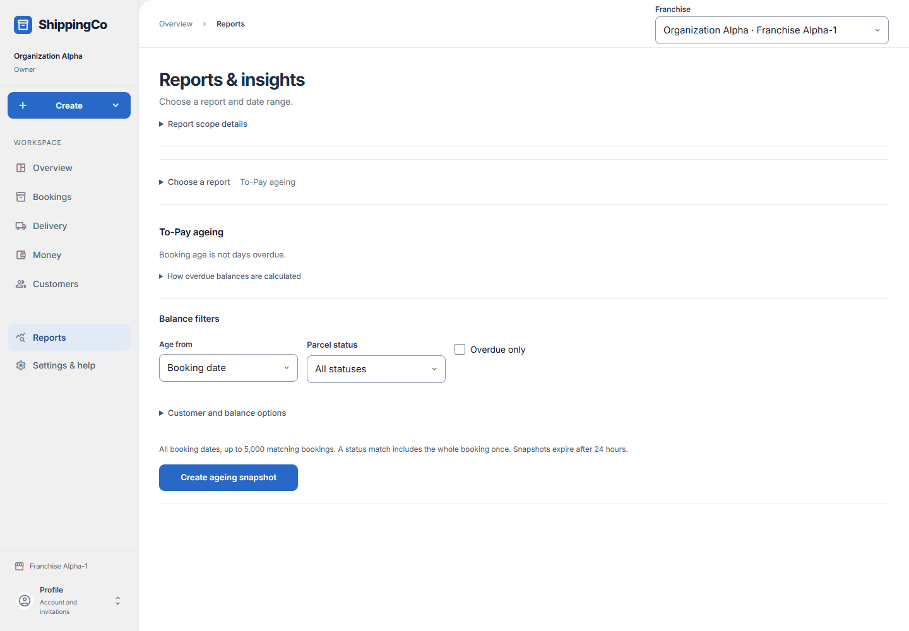

Outstanding balances by age
What this helps you do
- Find unpaid balances and distinguish booking age from overdue debt.
Open this feature
- Reports > Choose a report > Which payments are overdue?.
- Check the active branch first. Available actions depend on your role and the selected record.

Choose age and filters
- Age from can be Booking date or Due date. Booking age is not days overdue; due dates remain unknown where no terms were saved.
- Choose Parcel status or leave All statuses. Overdue only selects unpaid balances after due date in Kolkata.
- Customer and balance options are optional. Customer ID means the responsible debtor, which may differ from the shipping customer. Choose Outstanding only or All, including settled and credit.
- Select Create ageing snapshot. It covers all booking dates, up to 5,000 matches. A parcel-status match includes its whole booking once.
Read the report
- Check captured filters and time, gross, net collections, outstanding, refundable credit and age bands. Advances remain separate; delivery does not settle payment.
- Open linked evidence or statements before following up a balance. Load more bookings retrieves remaining rows.
- Download matching ageing CSV requires export permission. Captures expire after 24 hours; create a new report for current balances.
Fields and when to use them
These fields belong to the actions above. Complete the fields for your selected action; optional filters may stay blank.
- Age from: Choose booking date or due date; a missing due date remains unknown. Use when shown for the selected action.
- Parcel status: Choose the state or decision that matches the record you have reviewed. Use when shown for the selected action.
- Customer ID (optional): Optional reference of the responsible debtor; blank includes all permitted customers. Optional
- Balances: Outstanding only, or all including settled and credit. Use when shown for the selected action.
If you need to retry
- No records: check branch, account or customer and filters. Use Load more where offered before deciding a record is missing.
- Invalid or missing value: read the form message, correct the draft, then review amounts and references again.
- Uncertain save: use the offered retry for the same request. Do not create a second payment, return, expense or application to guess whether the first saved.
- Changed evidence or policy: refresh current records and review them before a new request. A saved report retains its captured figures; create another report for current results.
About this guide
Checked against the current screen code on 1 November 2026. This explains app behaviour, not tax or accounting advice. Buttons and records can differ by role.